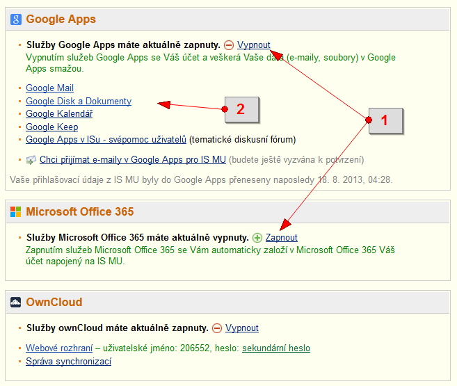

This page uses IS MU and Google Apps for Education to log you in. Before you can log in, you must enable Google Apps inside IS MU at https://is.muni.cz/auth/extservices/.
Na tuto stránku se budete přihlašovat pomocí IS MU a Google Apps pro vzdělávání. Před prvním přihlášením si musíte zapnout Google Apps v IS MU, což provedete na stránce https://is.muni.cz/auth/extservices/
. 